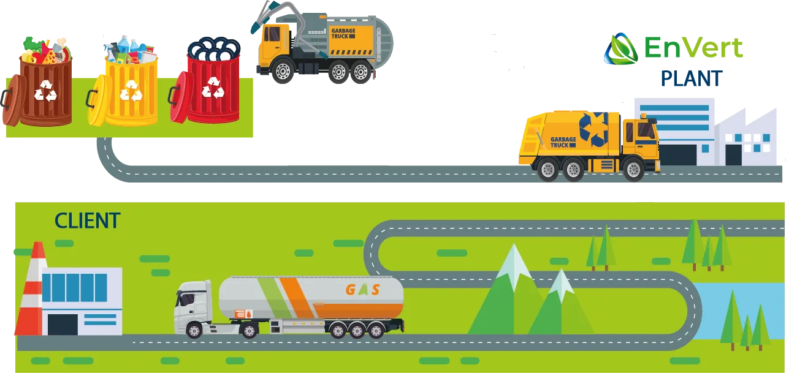
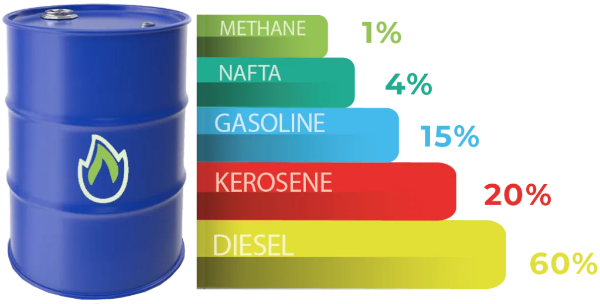

A patented, closed-loop industrial process converting waste into clean fuel — with no greenhouse gas emissions and over 70% conversion efficiency.
Plastic waste is a massive global problem. Burning or landfilling are not real alternatives. Material recycling fails when it comes to mixed and composite materials. Envert offers an environmentally friendly solution in partnership with Biocon Energy GmbH — a reliable and efficient technology based on the Cold Catalytic Conversion technique.
The CCC reactor is modular, handles between 10 and 20 tonnes of waste per day, and runs 24 hours a day. Unlike all other recycling technologies, a single CCC reactor handles different types of waste without important changes. The reactor operates at approximately 1 bar — no pressure danger, no emissions, fully closed system.

Material fed to an extruder — grain size 3–15mm, dry. Plastics, rubber, RDF, mixed waste.
Cold catalytic conversion at low temperature (~1 bar). Continuous 24h operation. Oil vapors evaporate at the outlet.
Resulting substances condensed, purified, and collected in separate tanks by hydrocarbon chain.
Fuel, electricity (via CHP), and heat — all sold to industry or the power grid.
Consumes little energy and offers a very high conversion rate. On average, conversion of waste to fuels exceeds 70%. 1,000 kg of waste → up to 850 litres of fuel.
Modular system — a single installation processes several types of waste, recyclable and non-recyclable. The reactor adjusts easily to the quantity of raw materials available.
Compact and removable — transportable from site to site in a 40-ft container. Upgrades can be added in parallel or superimposed modules.
Monitoring controlled via a remote platform by internet from any device — computer, tablet, or smartphone. Sensors for predictive maintenance minimize downtime.
Based on a technology with little risk of leakage, pollution, or explosion. A closed reactor operating at low temperatures — does not emit greenhouse gases.
Long life cycle of 20 to 25 years. Requires very little maintenance — only twice a year — making it one of the lowest total-cost solutions available.
Used Tires & Rubber
All Plastics (excl. PVC)
Paper & Cardboard
Wood Residues
Textile Waste
Organic Waste
RDF (Pre-treated Waste)
Mixed & Composite Materials

The light synthetic fuel can be refined to extract multiple grades of fuel, and the process gases are converted to electricity and heat via cogeneration.
Light fraction, petrochemical feedstock
Refined for vehicle use
Direct industrial fuel replacement
Via cogeneration — injected to grid or sold to industry
Valorisation of all types of waste
Clean environment — no water or air pollution
Renewable energy production
Cogeneration and sale of heat to neighboring plants
Maximum processing time: 10 minutes
Reduction of the ecological footprint of waste